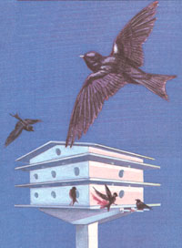
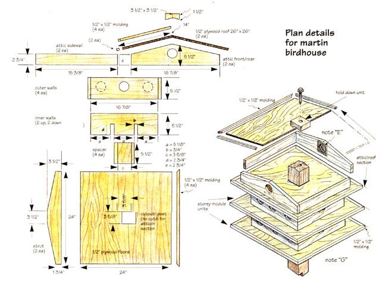
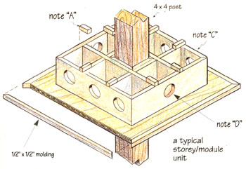
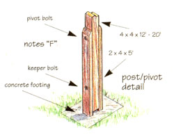

The Martin Birdhouse
Building a three level home for birds from wood, including: materials list, diagrams, instructions.
By Will Shelton
February/March 1998
Mothers woodshop
Building A luxury high-rise for one of the hardest-working backyard birds.
Text and Illustrations by Will Shelton.
Some things are just intrinsically appealing to me, such as beanie caps with propellers, old pickup trucks, and birdhouses. For reasons that I can't quite put my finger on, they are just ...neat. And a two- or three-storey martin birdhouse, well...
I became interested in martin birdhouses after seeing the movie Witness with Harrison Ford. If you remember, he smashed into one and then spent some time repairing both the house and his troubled spirit. I never actually saw martins in that particular house. It's possible that Harrison botched the job. To entice a colony to your birdhouse, you must make it attractive to them as well as you.
Purple martins need elbow room, so if you can, allow at least a twenty-foot diameter of clear space around the birdhouse. These birds like a high perch and like to have an abundance of egg shells at their disposal (not enough calcium in the old bug diet). Last, but not least, they like plenty of nice nesting material.
There are two practical reasons for attracting a martin colony to your homestead. First is that they are insect eaters, flies, mosquitoes, moths, and wasps, to name a few. When they are feeding their young (in the birdhouse), they have been observed returning with an insect every 30 seconds. Let's see, 10 hours of daylight equals 600 minutes or 1,200 bugs per day, per bird! Wow! So if you have any domestic critters producing organic substances which attract flies, here is safe and ecologically sound way to control their numbers.
The other contribution the colony will make is to scare away certain less desirable birds. Martins use their numbers to chase away hawks and crows. Got crows in the corn which are ignoring even the most realistic animated scarecrow? Or maybe you've lost a few chicks to the hawks? Martins to the rescue!
The Native Americans knew the advantages of having martin colonies around their corn fields. That's why they put up birdhouses made from gourds and calabashes to attract them. So even if you regard making the birdhouse as a chore, it is well worth the trouble and expense. There is another reward: the enjoyment of bird-watching right in your own backyard.
By the way, just like the swallows of Capistrano, the martin colonies return to the same site every year. So once you have attracted a flock, they will come back year after year. And the colony gets bigger. The only time the flock will split up is when there is "no more room at the inn."
This is one of the reasons why the house is built in sections or storeys. Got more birds? Add a section or two. The other reason is so that at the end of the season the whole thing can easily be disassembled for cleaning. The birdhouse is mounted on a post which in turn is mounted on a simple pivot mechanism so that the structure can easily be lowered to ground level.
You may find that a colony of house sparrows has taken up residence instead of the desired martin tenants. Although the sparrows are okay birds, they don't earn their keep the way martins do. You may have to give them a midnight eviction notice, which is another reason for the pivoting post. Now what you do with a burlap bag full of sparrows is your business, but I personally think badminton is wonderful form of recreation for the whole family. Just kidding, of course.
CONSTRUCTION
Each "storey" is a unit unto itself. This modular construction allows you to add units as your colony increases. The storeys are not attached to one another; they simply stack one atop the other The roof hold-down unit and cross struts hold all the storeys together. When it is time to add more storeys, simply move the cross struts down, remove the attic/roof section, and slide on the new storeys. Then stick the roof structure back on and replace the bolts. This type of construction allows for both expansion and easy end-of-season disassembly and storage. "Winter storage" will discourage house sparrows from moving in.
The dimension drawing and materials list provide the details for the attic/roof section and for one of the storey modules. To determine the materials you need, decide how many storeys you would like to start with and multiply that number against the unit pieces.
With a little care in construction and some maintenance, this house will last for years. Use a good quality sealing undercoat and final coat of paint. To help keep the temperature down for the nestlings, white should really be the only color used. The life of the plywood depends on this edge being completely sealed. Glue and nail all the pieces following the drawings.
A rudimentary knowledge of woodworking and tools is assumed for this birdhouse. My design calls for "stock" lumber with a minimum number of angle cuts. You can of course use all square cuts instead of miter cuts; adjust the dimensions accordingly. Miter cuts are preferred as they eliminate exposed end grains and give a much better finished appearance. The design also assumes you can extrapolate some dimensions and angles utilizing the dimensions given.
Note A Each storey has eight 1/2" x 1/2"x 2" spacers. They serve to allow air to circulate above each cubicle. It is very important that you do not omit these. If air is not allowed to circulate, the young birds will overheat and die.
Note B Use a carpenter's square to make sure the struts are 90 degrees to the post and parallel to each other. If not, all of the subsequent stacked storeys will be out of alignment.
Attach the cross struts to the central post using 1/4" x 6" lag bolts with large washers, three per side. Reverse the "pattern" on the other side. Use hot-dipped galvanized bolts. Also use 1/2" dowels for the perches. Keep them under 1 foot long or the weight of many birds may snap them off. The floor of the bottommost storey should be lag-bolted to the cross struts using two 1/4" x 3" bolts with washers per strut.
Note C The inner and outer walls should be nailed to their respective floors from the bottom.
Note D All the entrance holes should be 2 1/2" in diameter. I would purchase a circular hole saw to be used in a drill motor or brace for this purpose. Barring that, have fun with a keyhole saw.
Note E Screen off the attic. It will be too hot in there for young birds to survive. You want it vented, but unoccupied.
Note F Use 1/2" x 8" galvanized bolts for the pivot bolt (upper) and keeper bolt (lower). Double nut both bolts so little fingers won't "accidentally" pull the bolts out. Also, for safety's sake, it will take at least two people to raise and lower the structure. The post itself should be a standard 4 x 4, 12 to 20 feet in length. The top of the post has two angle cuts and a hole in the center. Drill the hole before cutting the angles. The angles are the same as the roof slope. Use the attic front wall for a template.
The outer pivot posts are standard 2 x 4 pressure-treated wood, 5 feet in length (2 feet in the ground). Give the whole structure a good concrete footing.
Note G The roof will naturally have to be covered to protect the wood and inhabitants below. You can use standard composite roof shingles, rolled roofing, a piece of tin or copper, or any other waterproof material at hand. I have even flattened out aluminum pop cans for shingles. You can square cut the roof panels and fill in the resulting gap at the peak with a putty made from waterproof glue and sawdust. The roof hold-down unit, which consists of a block, a bolt, and a washer, should be sealed with silicone each time it is taken out and reassembled. This unit goes on top of whatever you use for roofing material.
|
 |
 |
 |
 |
 |
|